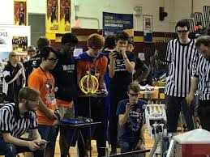

I've had the pleasure of competing in FTC robotics for Team 731 Wannabee Strange for the past two years, and I feel like I have learned a lot about robotics design in this time.
Because of this, I figured it would be cool to dedicate at least a page, if not the entire website, to documenting both my experiences and some knowledge.
As a member of Team 731, I have had the pleasure of winning several awards. These include the following:
The purpose of this website is to act as a sort of knowledge dump from me to whoever reads this. I've learned a lot in my 2 years on Wannabee Strange, and I want everybody to be able to experience the beauty of robotics like I have.
I'm going to be updating the website constantly over the next few weeks so that I can create an organized collection of as much knowledge as possible.